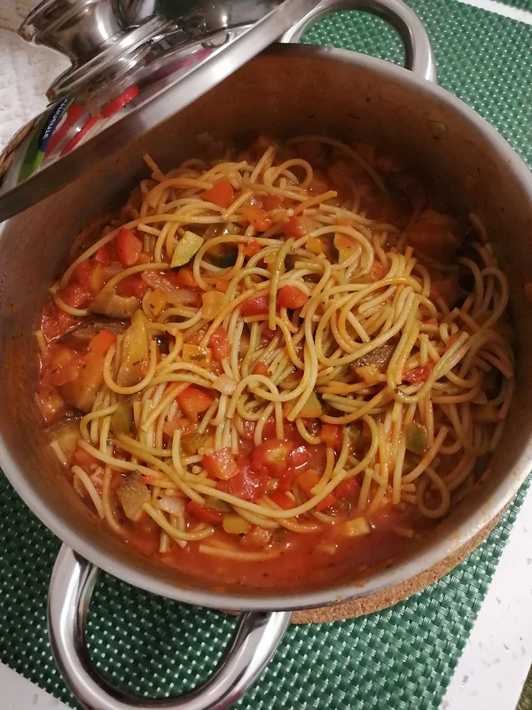

Ratatouille Spaghetti
Tempo de preparação
5min
Horas de Cozimento
15min
Tempo Total
20min
Porções
4

Ingredientes
- ½ cebola picada
- 2 dentes de alho picados
- ½ courgette cortada aos bocadinhos
- ½ beringela cortada aos bocadinhos
- ½ pimento vermelho cortado aos bocadinhos
- ½ pimento verde cortado aos bocadinhos
- ½ pimento amarelo cortado aos bocadinho
- 1 lata de tomates picados
- esparguete colorida q.b
- sal q.b
- pimenta preta q.b
- coentros q.b
- tomilho q.b
- orégãos q.b
Instruções
- Num tacho salteie a cebola com os alhos num fio de azeite até ficarem dourados.
- Junte a courgette, a beringela e os pimentos coloridos e tempere com sal e pimenta preta.
- Quando os últimos vegetais estiverem praticamente cozidos adicione a lata de tomates picados e tempere com coentros, tomilho e orégãos.
- No momento em que tudo estiver cozinhado, colorido e cheio de sabor junte a massa esparguete colorida cozida e escorrida. Misture com o recheio, deixe ferver mais 2 minutos e está pronto a servir o nosso Ratatouille Spaghetti!